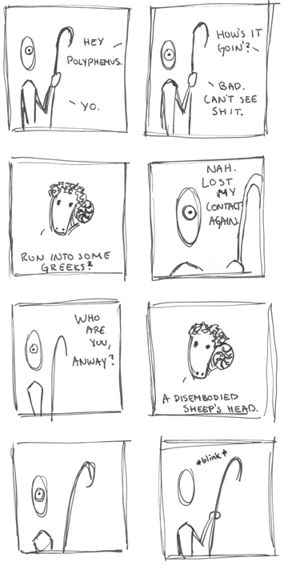

. . . 1 . . .
. . . 1 . . .
Polyphemus

March.17.2008
-----
...the humor of this comic is, of course, not in the foreshadowing of Odysseus, but in the irony that Polyphemus uses colloquial english, but is cultured enough to have a contact. (Not true, actually. That's not funny at all. At. All.) Reference: Euripides' Cylops, quite possibly the best and worst satyr play ever penned...
© 2008 Richard L.